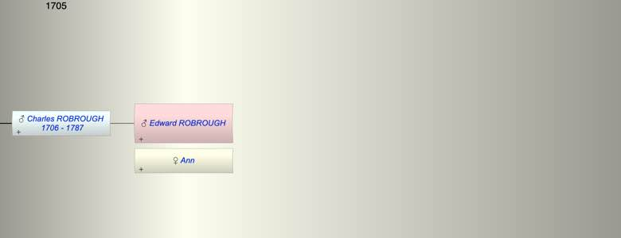

| [Index] |
| Edward ROBROUGH |
|  |
| +. Ann |
| Children (1): |
| Charles ROBROUGH (1706 - 1787) |
| Grandchildren (5): |
| Anna Maria ROBROUGH (1738 - 1800), Mary ROBROUGH (1740 - 1776), Rebecca ROBROUGH (1743 - 1808), Charles ROBROUGH (1745 - 1790), Samuel ROBROUGH (1747 - 1748) |
| Events in Edward ROBROUGH's life | |||||
| Date | Age | Event | Place | Notes | Src |
| 1706 | Birth of son Charles ROBROUGH | London | Note 1 | ||
| 1787 | Death of son Charles ROBROUGH (aged 81) | Note 2 | |||
| Note 1: bap 16 Mar 1706 son of Edward and Ann ex FMP |
| Note 2: Charles Robrough died 1 Sep 1787 aged 81 ex Southwark Cathedral MI |
| Created on a Mac™ using iFamily for Mac™ on 8 Oct 2023 |